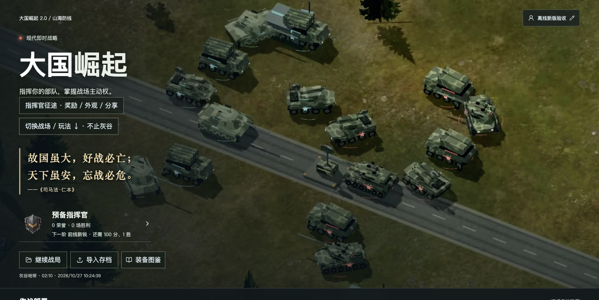
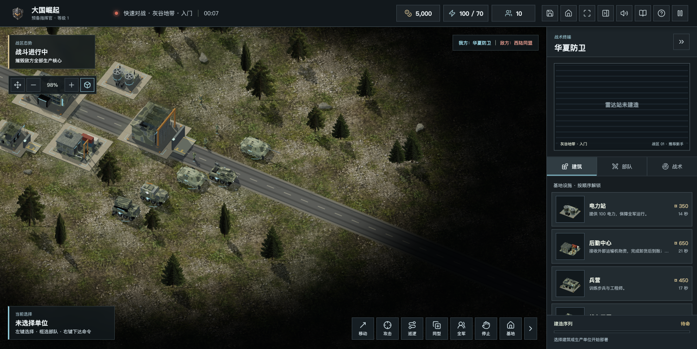
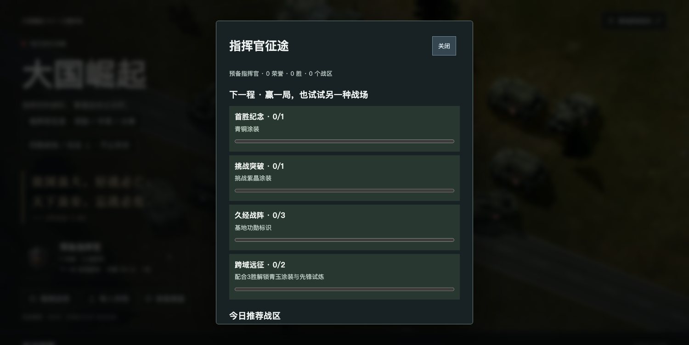
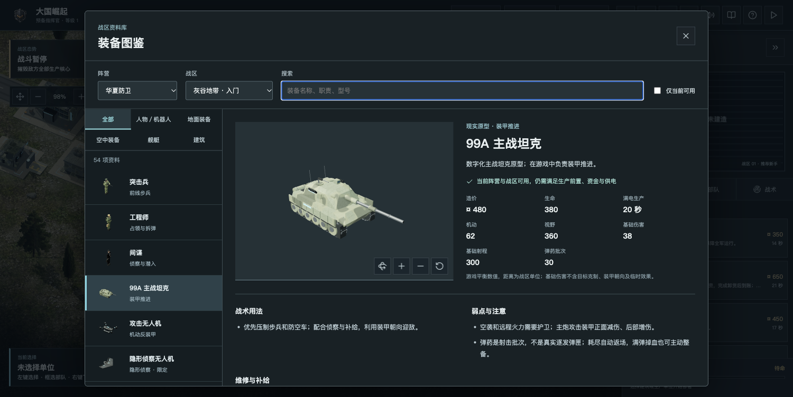
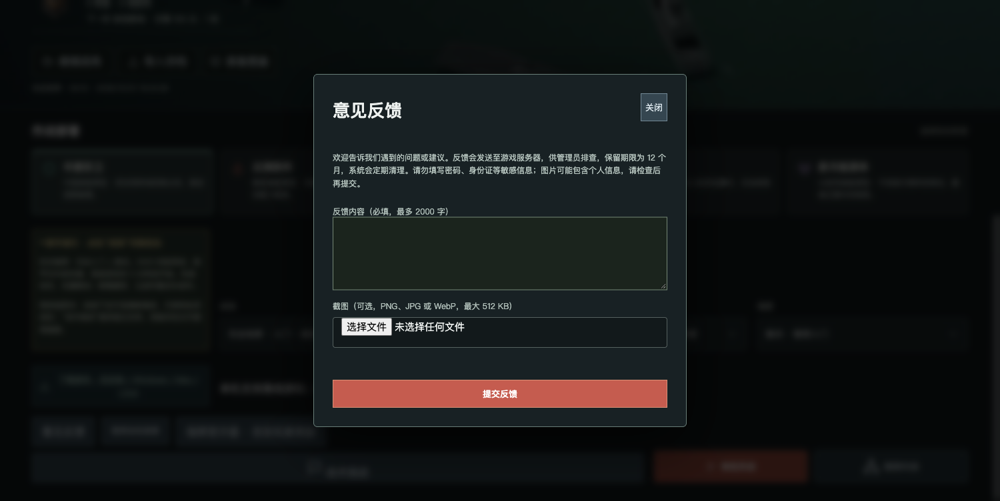
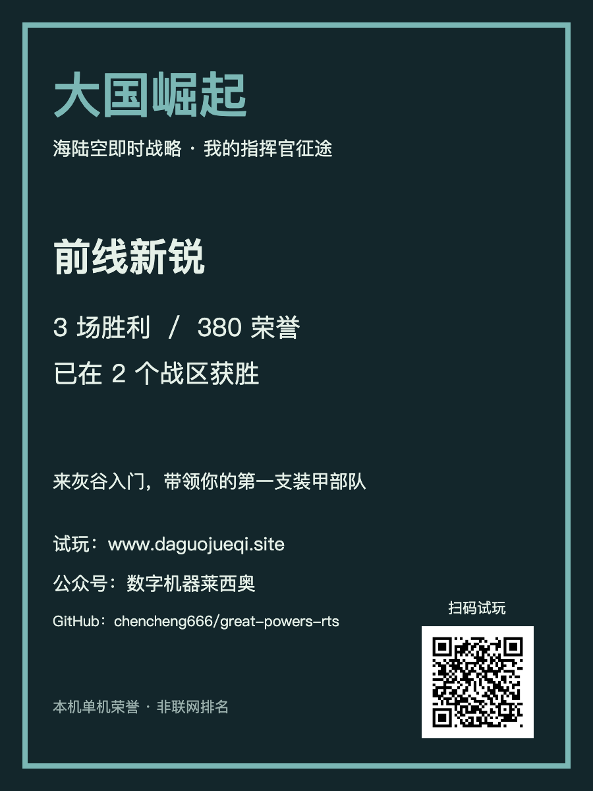

大国崛起 · 开发手记
《大国崛起》又更新了：首胜有奖励，海陆空征途也能晒战报
陈成 · 2026年10月29日
大家好，我是陈成。《大国崛起》又更新了。这次最想解决两件事：让第一次来的玩家更容易打赢，也让愿意继续玩的朋友，每次回来都有一个看得见的小目标。
这一轮不少修改，来自大家发来的截图、问题清单和试玩反馈。谢谢一直帮我找问题的朋友。游戏仍在持续打磨，你们的建议会实实在在影响它下一步的样子。

先让新手赢一场，再慢慢学会指挥
灰谷现在有独立的入门战区。选择新兵难度进行普通单机时，会有5000初始资金和一支支援编队，敌方首次进攻也留出更多准备时间。你可以先练习采集、造兵、维修和补给，再去挑战其他战场。
经典灰谷和其他地图继续保留。首页也加入了更醒目的玩法选择提示，海战、群岛和战术挑战不必再靠自己翻菜单寻找。

每一场胜利，都能留下点纪念
新入口叫“指挥官征途”。已有荣誉积分与称号继续使用，现在还会告诉你：下一步可以争取什么。首胜解锁青铜涂装；战术挑战获胜解锁紫晶涂装；累计三胜获得基地功勋标识。
累计三胜，并且在两个不同战区获胜，会解锁青玉涂装和额外的“先锋试炼”。先锋试炼是以灰谷地形为基础、加入双信标目标的单机规则变体，适合熟悉操作后再试试。原有地图不会被锁起来。

这些奖励主要是纪念和外观。涂装与基地标识只在普通单机展示，不增加攻击力、防御力，也不会影响联机公平。没有连续签到要求，暂时没空玩，不会扣积分或收回奖励。
战斗的反馈，也应该更清楚
受损建筑、车辆和飞机会冒烟，修复后烟雾会消失；炮弹命中和爆炸表现更醒目。此前的武器与移动音效、航母舰载机滑行、运输与补给等改进，也延续到这次版本。

游戏主页面可以提交文字反馈，图片可选。遇到问题时，描述地图、操作步骤和现象，再附一张截图，会更方便我定位。客户端也接入了必要的错误上报，后续会继续据此修复。

把自己的征途，分享给同样喜欢RTS的朋友
成长界面可以生成战报分享卡，也能复制试玩邀请。卡片带有官网试玩二维码、公众号名称和 GitHub 项目地址。喜欢的话，可以把自己的战绩分享给朋友，邀请他们也从灰谷开始。

网页、桌面和ZIP，按你的习惯来
这次整理为2.0.2“指挥官征途”。网页适合直接试玩；ZIP完整解压后打开PLAY.html，可断网单机；桌面安装包按Windows、macOS、Linux及芯片架构选择。具体文件与验收说明请以官网下载页为准。
提醒老玩家：成长与存档保存在本机。升级前请分别导出战局和荣誉备份，换浏览器、换设备或清理数据不会自动同步。意见反馈和匿名游玩统计需要联网，离线不影响单机。桌面构建通过也不代表所有系统与硬件都已实测，统信、麒麟仍需要大家帮忙反馈。
官网与下载：https://www.daguojueqi.site/downloads/ 直接试玩：https://www.daguojueqi.site/play/?from=wechat GitHub：https://github.com/chencheng666/great-powers-rts 公众号：数字机器莱西奥
接下来，你更想看到哪种更新：新的挑战任务、更有辨识度的外观，还是海战和运输玩法？欢迎在留言区告诉我，也欢迎直接在游戏里提建议。
故国虽大，好战必亡；天下虽安，忘战必危。——《司马法·仁本》